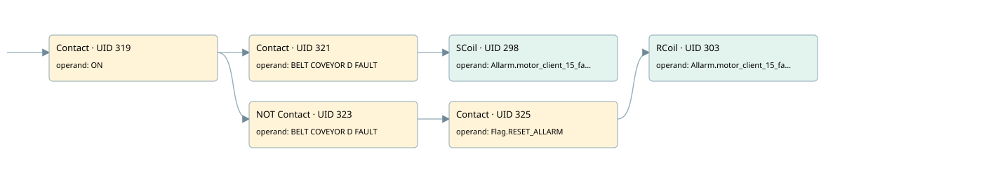

client motor 15 allarm
motor/alarm client · 검색 색인 순서 13 · 원본 내부 NID 추정 15
백업 PLF 원본의 2771183 바이트 위치에서 복원한 XML. 검색 문서 422의 객체 키 161022006d11000000000000와 연결했다. 이름 해석 6/6개. 남은 RefId는 상수 또는 미해석 참조다.
연결 구조 다시 그리기
원본 Part/PCon/Wire를 이용한 연결도다. TIA 화면의 래더 배치 또는 실행 결과를 재현한 그림은 아니다. 핀 연결은 아래 표와 원본 XML을 기준으로 읽는다. 노드 위에 마우스를 두면 피연산자 이름을 볼 수 있다.

접점·코일·블록과 피연산자
| Part UID | Gate | Negated 핀 | 연결 피연산자 |
|---|---|---|---|
| 319 | Contact | operand = ON | |
| 321 | Contact | operand = BELT COVEYOR D FAULT | |
| 298 | SCoil | operand = Allarm.motor_client_15_fault | |
| 323 | Contact | operand | operand = BELT COVEYOR D FAULT |
| 325 | Contact | operand = Flag.RESET_ALLARM | |
| 303 | RCoil | operand = Allarm.motor_client_15_fault |
접점 경로를 펼친 조건식
Contact·O/A·비교기의 원본 연결을 읽기 쉽게 펼친 보조 해석이다. POWER는 전원 레일 시작을 뜻한다. 호출 블록·에지·타이머의 내부 동작과 다중 쓰기 순서는 이 표로 실행 검증하지 않았다. 미해석 핀과 RefId는 원문 연결표에서 확인한다.
| UID | 동작 | 대상 | 원본 접점 경로 | 내용 |
|---|---|---|---|---|
| 298 | SCoil | Allarm.motor_client_15_fault | (ON AND BELT COVEYOR D FAULT) | 조건 성립 시 Set |
| 303 | RCoil | Allarm.motor_client_15_fault | ((ON AND NOT [BELT COVEYOR D FAULT]) AND Flag.RESET_ALLARM) | 조건 성립 시 Reset |
원본 배선 연결
| Wire UID | 동일 Wire 연결 끝점 |
|---|---|
| 327 | Powerrail {} ↔ Part 319.in |
| 310 | ORef 304 (ON) ↔ Part 319.operand |
| 320 | Part 319.out ↔ Part 321.in ↔ Part 323.in |
| 311 | ORef 305 (BELT COVEYOR D FAULT) ↔ Part 321.operand |
| 322 | Part 321.out ↔ Part 298.in |
| 313 | ORef 306 (Allarm.motor_client_15_fault) ↔ Part 298.operand |
| 314 | ORef 307 (BELT COVEYOR D FAULT) ↔ Part 323.operand |
| 324 | Part 323.out ↔ Part 325.in |
| 315 | ORef 308 (Flag.RESET_ALLARM) ↔ Part 325.operand |
| 326 | Part 325.out ↔ Part 303.in |
| 317 | ORef 309 (Allarm.motor_client_15_fault) ↔ Part 303.operand |
식별자 해석 근거 6개
| ORef UID | RefId | 이름 | IdentXmlPart 파일 | 해석 방법 |
|---|---|---|---|---|
| 304 | 1 | ON | 0599-IdentXmlPart.xml | UID/RID + search-text + NID agreement |
| 305 | 34 | BELT COVEYOR D FAULT | 0599-IdentXmlPart.xml | UID/RID + search-text + NID agreement |
| 306 | 35 | Allarm.motor_client_15_fault | 0601-IdentXmlPart.xml | UID/RID + search-text + NID agreement |
| 307 | 34 | BELT COVEYOR D FAULT | 0599-IdentXmlPart.xml | UID/RID + search-text + NID agreement |
| 308 | 7 | Flag.RESET_ALLARM | 0601-IdentXmlPart.xml | UID/RID + search-text + NID agreement |
| 309 | 35 | Allarm.motor_client_15_fault | 0601-IdentXmlPart.xml | UID/RID + search-text + NID agreement |
검색 코드 보조 자료
참조 명칭을 찾기 위한 자료이며 실행 순서나 AND/OR 관계는 위 연결표로 확인한다.
"on" "belt coveyor d fault" "allarm".motor_client_15_fault "belt coveyor d fault" "flag".reset_allarm "allarm".motor_client_15_fault